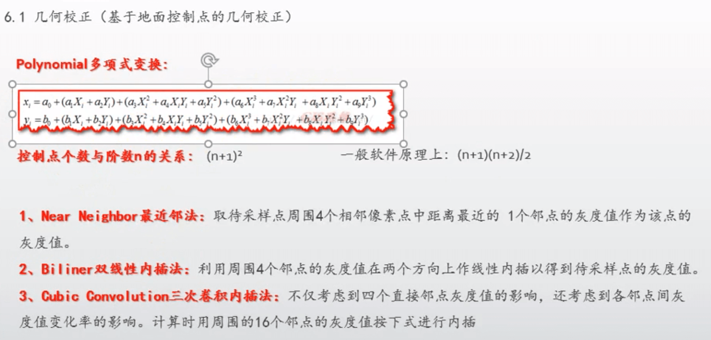
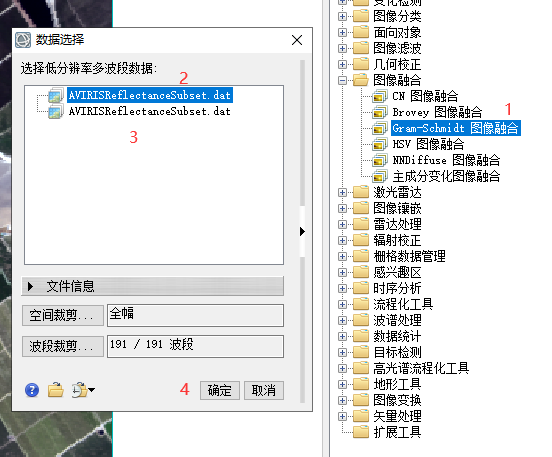
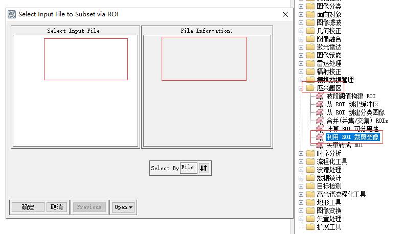

一、ENVI工具界面翻译
1.File文件菜单栏功能翻译
2.Edit编辑菜单栏功能翻译
3.Display显示菜单栏功能翻译
4.Placemarks地名标注菜单栏功能翻译
5.Views视图菜单栏功能翻译
6.Help帮助菜单栏功能翻译
二、软件界面
ENVI软件界面截图

File菜单翻译截图

地物波谱概念介绍及图例：
二维散点图概念介绍及图例：
首选项中显示配置注意：

注意：导出视图和视图截屏的不同处
鼠标取值（用于图片测量）快捷键

工具箱中重采样工具介绍

主要商业卫星介绍

数据预处理

2-1几何校正


在经典版本中:
1）点击菜单栏的文件 ---> 打开图像文件 ---> 选择光盘映像文件打开 ---> 选择 RGB Color ---> 在上面(图片选择框)中选择4、3、2波段 ---> Load RGB ---> Display #1 选择 New Display ---> 在原来操作框中选择另一张图片并且选择Gray Scale ---> load RGB
2）点击菜单栏的地图 ---> 几何校正 ---> 控制点选取 图像--图像 ---> Base Image选择#2、Warp Image选择#1 ---> OK
3）在第一张、第二张图分别找到一样位置的点点击Add Point，连续找三个不同位置的点（必须3个点）， 当你在第二张图片上随机选取一个点之后，再点击Predict，第一张图片就会找到与第二张图片几乎一样的同位置点
4）点击File ---> Save GCPs to ASCII 就会将刚才的标注点保存出一个文件方便下次操作
5）图3点击Options ---> 点击最后一项自动选点位 ---> 选择tm数据信息量大的第五波段 ---> 自动生成点位的参数设置，点击OK ---> Show List ---> Options ---> Oder Points by Error 以最大误差排列所有点 ---> 通过点击On/Off关闭误差大的点位
1）点击菜单栏的文件 ---> 打开图像文件 ---> 选择光盘映像文件打开 ---> 选择 RGB Color ---> 在上面(图片选择框)中选择4、3、2波段 ---> Load RGB ---> Display #1 选择 New Display ---> 在原来操作框中选择另一张图片并且选择Gray Scale ---> load RGB
2）点击菜单栏的地图 ---> 几何校正 ---> 控制点选取 图像--图像 ---> Base Image选择#2、Warp Image选择#1 ---> OK
3）在第一张、第二张图分别找到一样位置的点点击Add Point，连续找三个不同位置的点（必须3个点）， 当你在第二张图片上随机选取一个点之后，再点击Predict，第一张图片就会找到与第二张图片几乎一样的同位置点
4）点击File ---> Save GCPs to ASCII 就会将刚才的标注点保存出一个文件方便下次操作
5）图3点击Options ---> 点击最后一项自动选点位 ---> 选择tm数据信息量大的第五波段 ---> 自动生成点位的参数设置，点击OK ---> Show List ---> Options ---> Oder Points by Error 以最大误差排列所有点 ---> 通过点击On/Off关闭误差大的点位


新版

几何校正注意事项：
1、选择永久性地物 水塘 地标 道路的交叉口 小路 大路
2、点要分布均匀
3、采集控制点 一般35个以上点
1、选择永久性地物 水塘 地标 道路的交叉口 小路 大路
2、点要分布均匀
3、采集控制点 一般35个以上点
2-2影像融合、图像融合
 包含各种算法在里面
包含各种算法在里面
 经典界面的位置
经典界面的位置
 用其中一个插件的方法来图像融合
用其中一个插件的方法来图像融合
双击选择低波段和高波段进行融合

2-3影像镶嵌
镶嵌是将图像链接在一起以形成更大图像或者一组图像的过程。ENVI的图像镶嵌功能可提供交互式的方式，
将有地理坐标或者没有地理坐标的多幅图像合并，生成一幅单一的合成图像。
影像镶嵌有 无缝镶嵌工具和基于像素的图像镶嵌


点击影像镶嵌 ---> 无缝镶嵌工具 ---> 点击+ (添加两张) ---> 点击 重计算外边框 ---> 点击 定义输出区域 选各种需要羽化的区域
---> 点击 Accept Subset Area ---> 点击颜色校正（可以进行颜色的校正） --->
或者可以点击接边线（接边的处理,类似ps 的羽化，将不需要的比如云什么的切出去）
在输出时，重采样选择->三层卷积 选择输出波段->432波段
首先先将需要镶嵌处理的图片引入
点击影像镶嵌 ---> 基于像素的图片镶嵌 ---> 点击import 全选两张图片 ---> 往大调整 Xsize和Ysixe ---> ok
---> 选中图片右击选择Raise Image one Position ---> 调整图片位置进行拼接 ---> 拼接完毕点击文件File --->
Apply --->选择 ---> 改名字保存桌面 ---> 会在View视图窗口生成新的图片
2-4图像裁切
规则裁剪
1、点击文件File ---> 另存为 Save as ---> 另存为选一 ---> 波段裁剪选择432/空间裁剪 框出要裁剪的区域确定保存文件
1、点击文件File ---> 另存为 Save as ---> 另存为选一 ---> 波段裁剪选择432/空间裁剪 框出要裁剪的区域确定保存文件
2、右击原来的数据名称 ---> 新建感兴趣区 ---> 圈中做需要的区域 ---> 点击文件File ---> 另存为 Save as --->
另存为选一 ---> 选择框中选中原来的文件 ---> 波段裁剪选择432，空间裁剪选择使用ROI裁剪 ---> 选中ROI
---> 确定、路径保存（裁出 .dat .hdr .enp 三种文件）
通过小弹框里面也可以选择其他裁剪方式，例如输入坐标值的形式
通过小弹框里面也可以选择其他裁剪方式，例如输入坐标值的形式
不规则裁剪
点击感兴趣区 ---> 利用ROI裁剪图像 ---> 选择一个多光谱数据 ---> 确定 ---> 选择一个想要的图形数据(.shp结尾) 以这个数据为模型进行裁剪 或者是 选择之前框出的#ROI文件 ---> Mask pixls outside of ROI 选择为 Yes ---> 输出，选择输出路径及新的文件名 ---> 确定
点击感兴趣区 ---> 利用ROI裁剪图像 ---> 选择一个多光谱数据 ---> 确定 ---> 选择一个想要的图形数据(.shp结尾) 以这个数据为模型进行裁剪 或者是 选择之前框出的#ROI文件 ---> Mask pixls outside of ROI 选择为 Yes ---> 输出，选择输出路径及新的文件名 ---> 确定

envi数据格式
| 文件后缀名 | 解释 | 用途 |
|---|---|---|
| Shape files是ESRI提供的一种矢量数据格式，他没有拓扑信息，一个Shape files由一组文件组成， 其中必要的基本文件包括坐标文件(.shp)、索引文件(.shx)和属性文件(.dbf)三个文件 | ||
| .shp | 坐标文件 | .shp用于记录空间坐标信息，它是由头文件和实体信息两部分组成 |
| .shx | 索引文件 | .shx主要包含坐标文件的索引信息，文件中每个记录对应的坐标文件记录距离坐标文件的文件头的偏移量。他也是由头文件和实体信息连部分组成 |
| .dbf | 属性文件 | .dbf用于记录属性信息，它是一个标准的dbf文件，也是由头文件和实体信息两部分组成 |
2-5图像掩膜
掩膜处理：
点击工具框中的栅格数据管理 ---> 掩膜 ---> 双击创建掩膜 ---> 选择原始数据 ---> 确定 ---> Options ---> Import ROLs ---> 选择ROL数据或是.shp文件数据 ---> OK ---> 重新命名输出数据
点击工具框中的栅格数据管理 ---> 掩膜 ---> 双击创建掩膜 ---> 选择原始数据 ---> 确定 ---> Options ---> Import ROLs ---> 选择ROL数据或是.shp文件数据 ---> OK ---> 重新命名输出数据
应用掩膜：
应用掩膜 ---> 选择原始数据 ---> Select Mask Band ---> Mask Band ---> 确定 ---> 确定 ---> 重命名保存输出数据
应用掩膜 ---> 选择原始数据 ---> Select Mask Band ---> Mask Band ---> 确定 ---> 确定 ---> 重命名保存输出数据
地理坐标系（Geogrpahic Coordinate System）GCS
1）地理坐标系使用基于经纬坐标的坐标系统
2）描述地球上的某一点所处的位置
3）某一个地理坐标系时基于一个基准面来定义
2）描述地球上的某一点所处的位置
3）某一个地理坐标系时基于一个基准面来定义
投影坐标（PCS）：使用基于X，Y值得坐标系统来吗描述地球上某个点所处的位置，这个坐标系时从地球的近似椭圆体投影得到的，它对应于某个地理坐标系
投影坐标系由以下参数确定:
1）地理坐标系（由基准面确定，比如：北京54、西安80、CGCS2000.基准面时利用特定椭球体对待定地区地球表面的逼近， 因此每个国家或地区均有各自的基准面，我们通常称为的北京54坐标系、西安坐标系实际上指的是我国的两个大地基准面）
2）投影方法（比如高斯--克吕格（TM的变种）、Lambert投影、UTM投影、TM（通用横轴墨卡托））
投影坐标系由以下参数确定:
1）地理坐标系（由基准面确定，比如：北京54、西安80、CGCS2000.基准面时利用特定椭球体对待定地区地球表面的逼近， 因此每个国家或地区均有各自的基准面，我们通常称为的北京54坐标系、西安坐标系实际上指的是我国的两个大地基准面）
2）投影方法（比如高斯--克吕格（TM的变种）、Lambert投影、UTM投影、TM（通用横轴墨卡托））
定义Beijing54、Xian80、CGCS2000坐标系
点击文件打开.dat文件 ---> 右击数据名查看元数据 ---> 地理信息 ---> 编辑元数据 ---> 选择坐标系统三个小圆点 ---> Projected Coordinate Systems ---> Gauss Kruger ---> CGCS2000 ---> CGCS2000 3 Degree GK CM 120E ---> 确定（确保像元大小和连接点数据和地理信息中的一一对应好）
点击文件打开.dat文件 ---> 右击数据名查看元数据 ---> 地理信息 ---> 编辑元数据 ---> 选择坐标系统三个小圆点 ---> Projected Coordinate Systems ---> Gauss Kruger ---> CGCS2000 ---> CGCS2000 3 Degree GK CM 120E ---> 确定（确保像元大小和连接点数据和地理信息中的一一对应好）
栅格重投影 栅格那点事儿
栅格数据管理 ---> 栅格重投影 ---> 重投影数据 ---> 浏览 ---> 选择一个数据 ---> 选择输出坐标系 ---> Geographic Coordinate Systems ---> Asia ---> China Geographic Coordinate System 2000 ---> 输出文件名 ---> 确定
栅格数据管理 ---> 栅格重投影 ---> 重投影数据 ---> 浏览 ---> 选择一个数据 ---> 选择输出坐标系 ---> Geographic Coordinate Systems ---> Asia ---> China Geographic Coordinate System 2000 ---> 输出文件名 ---> 确定
2-6图像增强
图像增强 ：图像增强事通过各种增强算法，提高影像的显示效果。图像增强的实质事提高影像的质量和突出所需要的信息，从而有利于分析判读或进一步处理。
1）空间增强：通过改变图像中的单个像元及相邻像元的灰度值来增强图像，使图像的空间几何特征得到增强，易于分析，例如河流、道路等。 卷积滤波、形态学滤波、纹理分析、焦点分析
2）辐射增强：通过对单个像元的灰度值处理进行变换处理来增强图像。图像拉伸、直方图匹配、亮度反转、噪声处理等。
3）光谱增强：基于多光谱数据的波段进行变换来进行图像增强。主成分分析、色彩空间分析、指数计算。
1）空间增强：通过改变图像中的单个像元及相邻像元的灰度值来增强图像，使图像的空间几何特征得到增强，易于分析，例如河流、道路等。 卷积滤波、形态学滤波、纹理分析、焦点分析
2）辐射增强：通过对单个像元的灰度值处理进行变换处理来增强图像。图像拉伸、直方图匹配、亮度反转、噪声处理等。
3）光谱增强：基于多光谱数据的波段进行变换来进行图像增强。主成分分析、色彩空间分析、指数计算。
图像增强之卷积增强
卷积滤波处理会消除图像低频的成分，保留高频的成分
图像滤波 ---> 卷积和形态学滤波 ---> Convolutions ---> High pass(高通)/low pass(低通) ---> 调整Kenel Size 和 Image Add Back ---> Apply To File ---> 选择一个文件（以此文件为基础进行滤波处理） ---> 确定
连同原来的图片 点击透视显示按钮，进行透视观看
图像滤波 ---> 卷积和形态学滤波 ---> Convolutions ---> High pass(高通)/low pass(低通) ---> 调整Kenel Size 和 Image Add Back ---> Apply To File ---> 选择一个文件（以此文件为基础进行滤波处理） ---> 确定
连同原来的图片 点击透视显示按钮，进行透视观看
光谱增强
图像变换 ---> 主成分变换 ---> 新计算统计值主成分变换 ---> 选择原文件 ---> 确定 ---> Stats Subset（选择增强范围，可框一部分或是全部）---> 设置Stats X 和 Stats Y ---> Choose(输出统计值) ---> 选择(输出成果) ---> Select Subset from Eigenvalues ---> 确定 ---> 快捷菜单中的第二个数据管理器 ---> 波段选择123 ---> 确定
图像变换 ---> 主成分变换 ---> 新计算统计值主成分变换 ---> 选择原文件 ---> 确定 ---> Stats Subset（选择增强范围，可框一部分或是全部）---> 设置Stats X 和 Stats Y ---> Choose(输出统计值) ---> 选择(输出成果) ---> Select Subset from Eigenvalues ---> 确定 ---> 快捷菜单中的第二个数据管理器 ---> 波段选择123 ---> 确定
波谱处理
波谱处理 ---> 植被 ---> NDVI ---> 选择一个数据 确定---> NDVI Bands选择想要的波段范围 ---> Choose输出文件 ---> 确定
2-7影像分类
遥感影像分类是以遥感数字图像为研究对象，在计算机系统支持下，综合运用地学分析、遥感图像处理、地理信息系统、模式识别与人工智能技术，
对遥感图像中各类地物的光谱信息和空间信息进行分析处理，依据其特征变量，将特征空间划分为互不重叠的子空间，把各个像元规划到各个子空间的过程。
影像分类时从多波段栅格影像中提取信息类的任务。基于影像分类生成的栅格可用于创建的专题地图。分类的目的是将研究区域中的每个像元都分配到类或目录。类或目录的示例 包括土地适用类型、熊更喜欢的位置以及雪崩的可能性等。根据分析人员与计算机在分类过程中的交互情况，将有两种类型分类：监督分类和非监督分类，还有目前常见的决策树分类
影像分类时从多波段栅格影像中提取信息类的任务。基于影像分类生成的栅格可用于创建的专题地图。分类的目的是将研究区域中的每个像元都分配到类或目录。类或目录的示例 包括土地适用类型、熊更喜欢的位置以及雪崩的可能性等。根据分析人员与计算机在分类过程中的交互情况，将有两种类型分类：监督分类和非监督分类，还有目前常见的决策树分类
在监督分类中，你有一个要素的采样。例如，您知道在研究区域的北部有一片针叶林，因此您通过在地图上用一个面（或多个面）将其包围来识别它。然后，
分别为麦田、市区建筑物和水域创建一个面来将其包围，您继续执行此过程，直到有足够多的元素来表示类，且数据中的多有类均已被识别为止。每租要素
都被视为一个类，而包围该类的面便是训练的样本。将样本识别完成后，对其进行多元统计数据计算以建立类内部与类之间的关系。统计数据存储在特征文件中。
在非监督分类中，你不知道任何指定位置的要素实际上是什么，但是你想要将每个位置聚合为指定数量的组或聚类之一。由什么来确定每个位置要分配给 哪个类或聚类取决于对输入波段进行的多元统计数据计算？根据聚类中每个像元的每个波段的值，每个聚类在统计上都独立于其他聚类。用于建立聚类定义 的统计数据将存储在特征文件中。
在非监督分类中，你不知道任何指定位置的要素实际上是什么，但是你想要将每个位置聚合为指定数量的组或聚类之一。由什么来确定每个位置要分配给 哪个类或聚类取决于对输入波段进行的多元统计数据计算？根据聚类中每个像元的每个波段的值，每个聚类在统计上都独立于其他聚类。用于建立聚类定义 的统计数据将存储在特征文件中。
非监督分类后的处理是：
1）类别定义（算法算出后的结果名称都是没有定义的类别名称的，需要自己判断进行定义）
图像分类 ---> 非监督分类 ---> IsoData ---> 选择一个多波段数据 ---> 设置Number of Classes Min Max 以及其他---> 选择输出文件名 ---> 确定
右击颜色进行修改calss名字和颜色修改(例如：水体：蓝色，山地：墨绿)
2）合并子类（例如：河水，湖水，海水，色彩不一样，但都是水体，就需要合并处理）
图像分类 ---> 分类后处理 ---> 分类合并 ---> 选中一个需要处理的数据确定 ---> Select Input Class \ Select Output Class 会将input添加到output中 ---> ok ---> Remove Empty Classes选Yes 会只保留合并后的名字 ---> 选择文件保存
1）类别定义（算法算出后的结果名称都是没有定义的类别名称的，需要自己判断进行定义）
图像分类 ---> 非监督分类 ---> IsoData ---> 选择一个多波段数据 ---> 设置Number of Classes Min Max 以及其他---> 选择输出文件名 ---> 确定
右击颜色进行修改calss名字和颜色修改(例如：水体：蓝色，山地：墨绿)
2）合并子类（例如：河水，湖水，海水，色彩不一样，但都是水体，就需要合并处理）
图像分类 ---> 分类后处理 ---> 分类合并 ---> 选中一个需要处理的数据确定 ---> Select Input Class \ Select Output Class 会将input添加到output中 ---> ok ---> Remove Empty Classes选Yes 会只保留合并后的名字 ---> 选择文件保存
监督分类：
1）创建训练样本（绘制感兴趣区）
右击文件名字 ---> 创建感兴趣区 ---> 修改名称和颜色，分别取不同的名字 ---> 使用几何的多边线框出感兴趣区 ---> 感兴趣区域工具中的 文件 ---> 另存为 ---> 全选 ---> 保存文件
2）评价训练样本
a、计算分离度 b、n维可视化
继续（1）步骤 ---> 点击感兴趣区域工具中的 选择 ---> 计算ROI可分离度
结果如果大于1.8视为合格的，小于1.8为不是很合格，小于1.6说明有区域中有相似的区域，考虑合并或是重新采集数据
继续（1）步骤 ---> 点击感兴趣区域工具中的 选择 ---> 发送ROIs到n维可视化 ---> 7个数字全选 ---> 点击-> 进行空间查看 或是start自动旋转查看
通过看空间的图层是否有交叉或是有重合说明分离的不是很好
3）执行监督分类
图像分类 ---> 监督分类 ---> 最大依然法 ---> 选择一个数据确定 ---> Select All Items ---> Set probability Threshold(设置似然度阈值) 改成 None ---> Data Scale factor(数据比例系数:2的n次方减1，n代表数据的位数，这里要自己计算得出结果填写进去) ---> 选择输出文件名（两个） ---> 确定
1）创建训练样本（绘制感兴趣区）
右击文件名字 ---> 创建感兴趣区 ---> 修改名称和颜色，分别取不同的名字 ---> 使用几何的多边线框出感兴趣区 ---> 感兴趣区域工具中的 文件 ---> 另存为 ---> 全选 ---> 保存文件
2）评价训练样本
a、计算分离度 b、n维可视化
继续（1）步骤 ---> 点击感兴趣区域工具中的 选择 ---> 计算ROI可分离度
结果如果大于1.8视为合格的，小于1.8为不是很合格，小于1.6说明有区域中有相似的区域，考虑合并或是重新采集数据
继续（1）步骤 ---> 点击感兴趣区域工具中的 选择 ---> 发送ROIs到n维可视化 ---> 7个数字全选 ---> 点击-> 进行空间查看 或是start自动旋转查看
通过看空间的图层是否有交叉或是有重合说明分离的不是很好
3）执行监督分类
图像分类 ---> 监督分类 ---> 最大依然法 ---> 选择一个数据确定 ---> Select All Items ---> Set probability Threshold(设置似然度阈值) 改成 None ---> Data Scale factor(数据比例系数:2的n次方减1，n代表数据的位数，这里要自己计算得出结果填写进去) ---> 选择输出文件名（两个） ---> 确定
最大依然法：在多维空间中每个类样本中的像元呈正态分布，贝叶斯决策理论，将各个像元指定给分类模板表示的类时，此方法会同时考虑类模板的方差和协方差。假设类
样本呈正态分布，则可使用均值向量和协方差矩阵作为类的特征。如果给定了每个像元值得这两个特征，则可计算每个类得统计概率，以确定像元作为该类得成员资格 2^n -1
神经网络分类：指用计算机模拟人脑的结构，用许多小的处理单元模拟生物的神经元，用算法实现人脑的识别、记忆、思考过程应用于图像分类
使用Neural Net 选项可以应用一个分层的正向神经元网络分类。该技术在进行监督学习时使用标准的后向传播技术。用户可以选择所用的隐藏层的数量， 也可以在对数和双曲线活化函数之间选择所需函数。由于调整节点中的权重可以使输出节点活化与所需的输出结果间差异达到最小化，因此神经元网络技术 利用改方法对发生的事件进行学习。在学习过程中，误差在网络中后向传播，同时使用递归法条咸亨权重，也可以使用神经元网络来进行一个非线性分类。
使用Neural Net 选项可以应用一个分层的正向神经元网络分类。该技术在进行监督学习时使用标准的后向传播技术。用户可以选择所用的隐藏层的数量， 也可以在对数和双曲线活化函数之间选择所需函数。由于调整节点中的权重可以使输出节点活化与所需的输出结果间差异达到最小化，因此神经元网络技术 利用改方法对发生的事件进行学习。在学习过程中，误差在网络中后向传播，同时使用递归法条咸亨权重，也可以使用神经元网络来进行一个非线性分类。
图像分类 ---> 监督分类 ---> 神经网络法 ---> 选择一个数据确定 ---> Select All Items ---> 确定（效果很不错）
支持向量机分类：支持向量机分类（SVM）是一种建立在统计学理论基础上的机器学习方法。SVM可以自动寻找那些对分类有较大区分能力的支持向量，
由此构造出分类器，可以将类与类之间的间隔最大化，因此有较好的推广和较高的分类准确率。
图像分类 ---> 监督分类 ---> 支持向量机 ---> 选中一个数据(如果没有ROI，就报错) ---> 确定 ---> Select All Items --->
Kernel Type 可以按照自己需求修改，下面的设置异同，但基本不改变 ---> 确定（此处会很卡）
监督分类 分类精度评价：
1、分类结果查看对比 2、混淆矩阵 3、ROC曲线
监督分类后的处理：
混淆矩阵分析：
混淆矩阵使通过将各个地表真实像元的位置和分类与分类图像中的相应位置和分类进行比较计算的。主要用于比较分类结果和地表真实信息，可以把分类结果显示在一个矩阵里面。（像元个数--面积）
引入之前自己图像分类好的数据 ---> 图像分类 ---> 分类后处理 ---> 利用地面真实分类图像进行混淆矩阵分析 ---> 选择自己之前图像分类好的数据 ---> 选择图像真实的图像分类数据
---> 如果两个数据的分类时名称一样就自动匹配了，否则需要自己手动匹配 ---> 选择输出文件名 确定（这个设置页面可以自己按照自己的需要设置，一般默认）
在生成的File表中，Overall Accuracy(总体分类结果数) > 95%才是较好的， Kappa Coefficient 系数越大越好(>0.9) ，对比列表中（混淆矩阵），如果横纵不同名组合有值，
说明是分类出错的像元个数（行列是主）